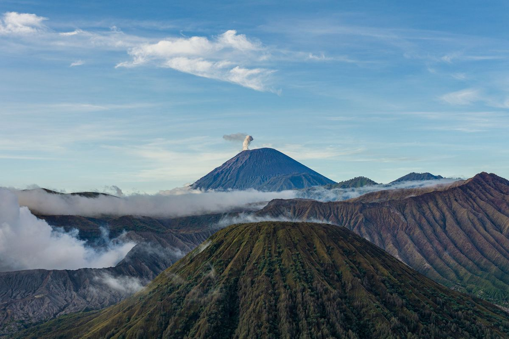
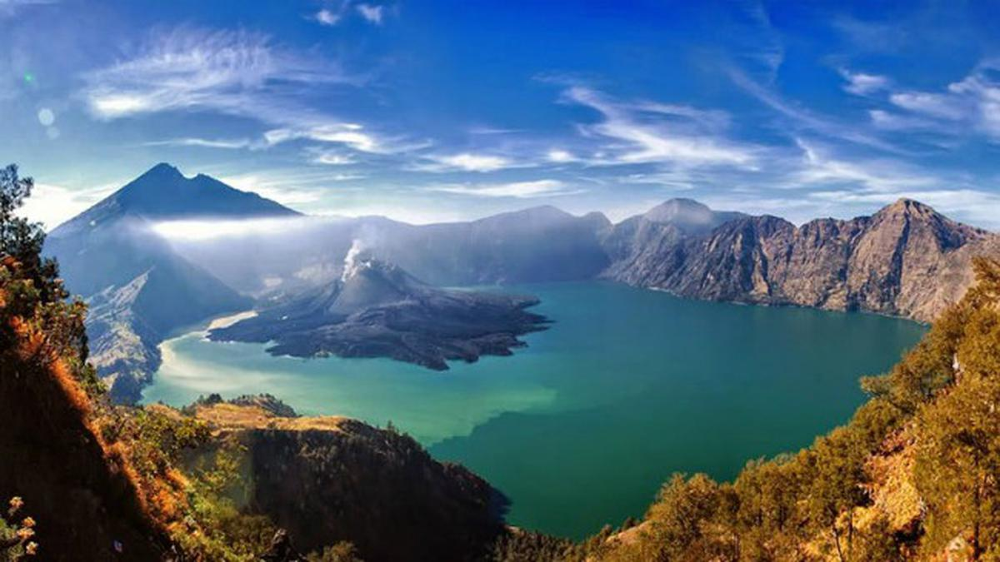
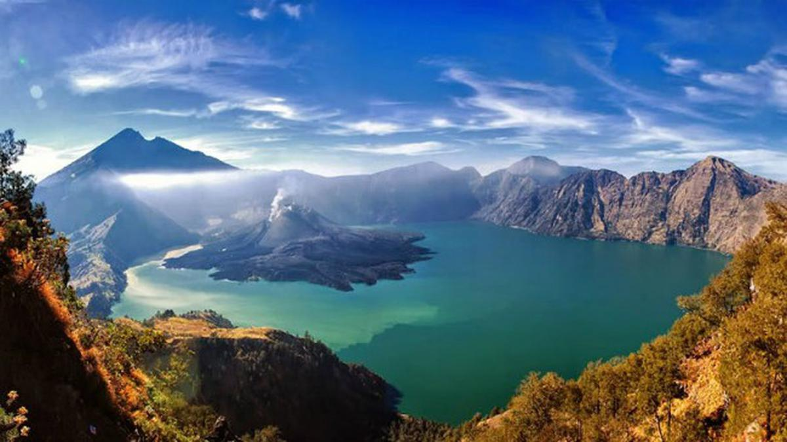
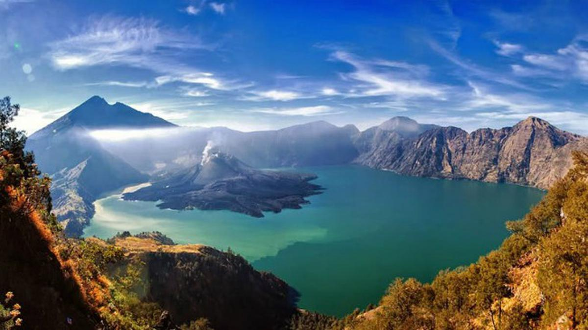
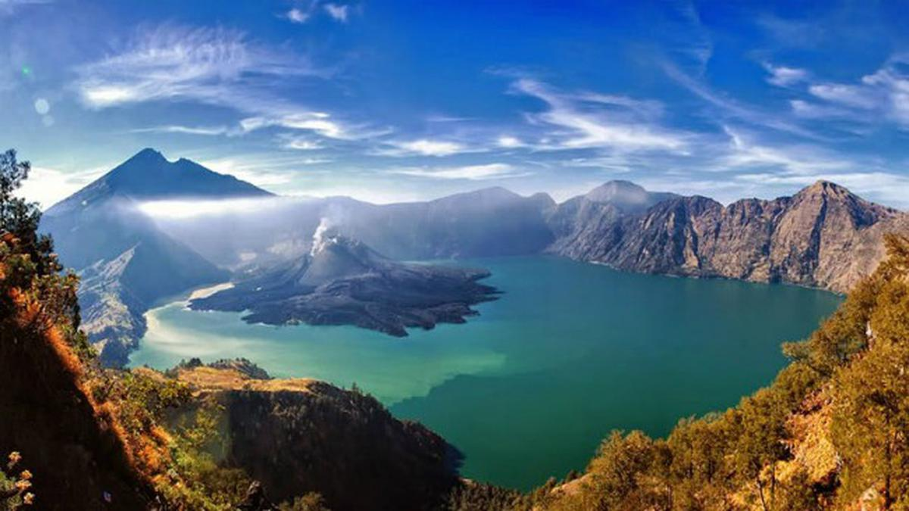
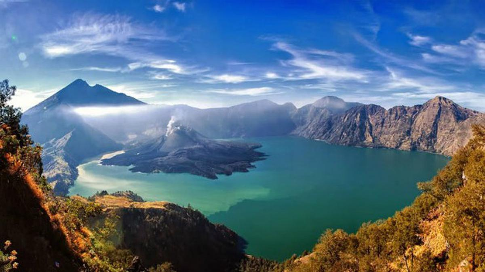
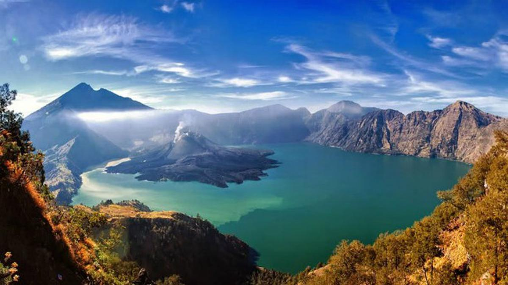
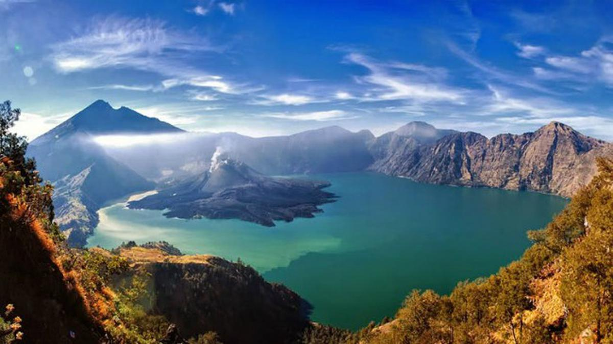

🌿 Pesona Alam Indonesia
Beranda
Destinasi
Galeri
Kontak
Galeri Wisata Indonesia
🖠Pantai
⛰ Gunung


🯠Candi
💧 Air Terjun
ğŸ Budaya & Seni
🬠Video Wisata
Browser kamu tidak mendukung video.
Browser kamu tidak mendukung video.


 





 
